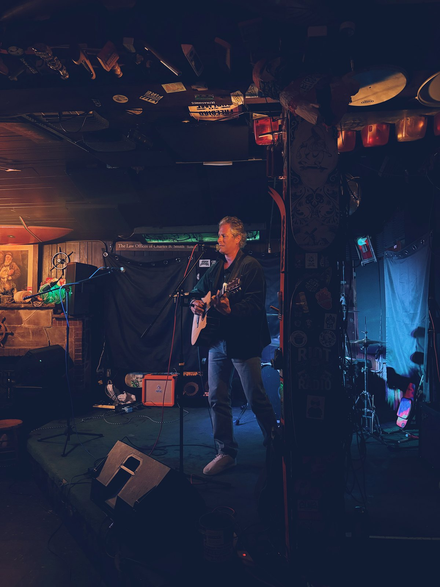

Pascal
Nothing between me and the song. Nothing between the song and you.

Solo acoustic guitar and vocals. Songs that say something true and don't look away from it.
Springsteen · Zach Bryan · Mumford and Sons · Radiohead · Bob Dylan · Coldplay · Glen Hansard · Death Cab for Cutie · Sara Bareilles · Tracy Chapman
Less a covers night than a conversation. Longing, perseverance, the quiet dignity of ordinary life. Creep next to Redemption Song. Falling Slowly after Dancing in the Dark. Rock swagger and quiet confession.
One true thing at a time.
No big moves. No over-singing. Between songs, one thing said plainly, then back into it.

Watch
One live take.

Listen
Four from the set.
Repertoire
Songs your crowd will know.
~60 songs in rotation. Full list on request.

For the booker
What the venue needs to know.
- Format
- Solo acoustic guitar and vocals. No backing track. No PA drama.
- Set length
- 45 / 60 / 90 minutes. Two sets available.
- Suitable for
- Pubs · Private functions · Intimate venues · Acoustic showcases
- Tone
- Warm. Emotionally honest. No filler, no hype.
- Technical
- Self-contained. Own gear. One power outlet and a corner.
About
A short version.
Marin County, California. Years of living rooms, kitchens, and the occasional small stage. At home: a 1950 acoustic that once belonged to Bob Dylan. On the road: something lighter.

Booking
Get in touch.
pascal.zuta@gmail.com
Marin County, California